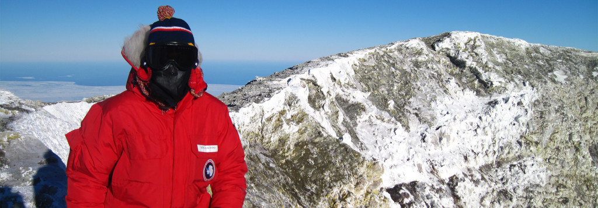
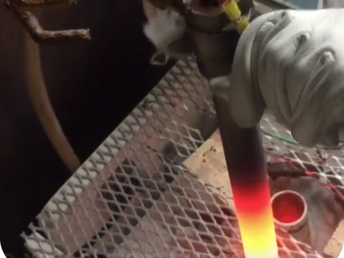
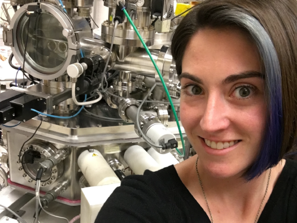
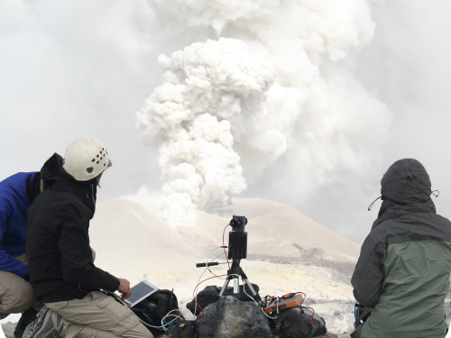
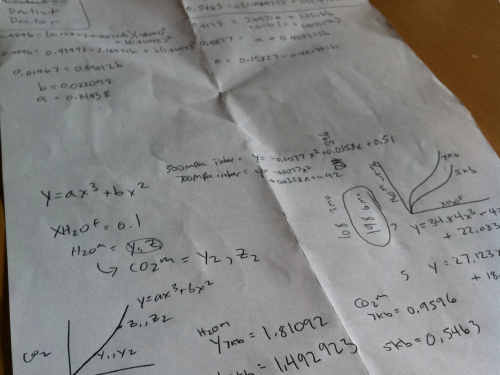

Research
Volcanology · Experimental Petrology · Volatiles in Magmas
Volcanoes are the ultimate expressions of Earth's deep processes.

I am a Research Scientist at the SETI Institute Carl Sagan Center for Research. I use a combination of fieldwork, laboratory experiments, and thermodynamic modeling to better understand the inner workings of crustal volcanic systems. I am particularly interested in answering questions about how volcanic volatiles (H2O, CO2, S, F, Cl) cycle within the Earth and other planets and how a combination of magma crystallization, degassing, and chemical evolution leads to volcanic eruption.
The Tools to Read the Rocks
The rock record tells the story of the Earth. Geologists learn how to read it.

Experimental Petrology
Experimental petrology techniques to recreate miniature magma chambers in the lab.

Analytical Petrology
Igneous rocks record the histories of magma formation, crystallization, degassing, and more. I use geochemical analysis to unlock the mysteries stored within the rocks I study.

Remote Sensing
I utilize in situ volcanic remote sensing techniques (DOAS, UV Cameras, OP-FTIR, solar photometry) and satellite remote sensing (OMI and ALI instruments) to measure SO2 and other gas species emitted from active volcanoes.

Thermodynamic Modeling
Thermodynamics is the magical math that brings all of my interests together. It can be used to model crystallization and degassing processes within volcanic systems and to constrain total volatile budgets of volcanoes.
Education
B.S. Geology, Arizona State University (2010) — Worked in the OmniPressure experimental lab (Depths of the Earth) under Dr. Gordon Moore.
Ph.D., University of Cambridge (2014) — Studied Mt. Erebus, an active volcano on Ross Island, Antarctica, with Dr. Clive Oppenheimer.
NSF Post-Doctoral Fellow, US Geological Survey (2014–2016) — Studied the 'Millennium Eruption' of Paektu volcano on the border of North Korea and China with Drs. Tom Sisson and Jake Lowenstern.
Post-Doctoral Researcher, Arizona State University (2016–2018) — Worked with Drs. Christy Till and Ariel Anbar studying how redox potential may be transferred into the deep Earth and back to the surface in arc magmas.
Field & Lab Experience
I have worked on San Carlos, Arizona; Villarrica, Puyehue, and Lascar in Chile; Paektu, North Korea/China; Turrialba and Poas, Costa Rica; Erebus volcano, Antarctica; Nyiragongo and Nyamulagira in the Democratic Republic of Congo; and Campi Flegrei in Naples, Italy. I have done experimental work at Johnson Space Center, the US Geological Survey in Menlo Park, CA, Stanford University, the OmniPressure Lab (Depths of the Earth) and the EPIC lab at Arizona State University, the University of Minnesota Experimental Petrology Group, the Institut des Sciences de la Terre d'Orleans (ISTO), and the experimental petrology lab at Universita di Camerino.
Current Projects
Tracing Rocky Exoplanet Compositions (TREC)
Detecting life on rocky exoplanets will require more than spotting oxygen in their atmospheres—we need to understand the geochemistry beneath the surface that controls whether oxygen is truly a sign of biology. Phosphorus, an element essential for life, plays a surprisingly central role: it limits biological oxygen production on Earth, and its availability on other planets depends on how it behaves in magmas with compositions potentially very different from anything in our Solar System. To fill this gap, we are running high-pressure, high-temperature laboratory experiments that simulate melting in exoplanet mantles across a wide range of chemistries and oxidation states, measuring how phosphorus and other key elements partition into the resulting melts. These data are being incorporated into open-source thermodynamic tools on the ENKI platform, giving the community new capabilities for modeling volcanism and atmospheric evolution on rocky worlds unlike our own.
Quantifying Sampling Depth Bias in Planetary Interiors
NASA ROSES Solar System Workings (PI, $454,942)
Melt inclusions (MI) are micron-scale blebs of silicate melt that become entrapped within growing crystals in planetary interiors, providing critical snapshots of a rock's history. However, the mechanisms of MI formation and survival remain poorly understood, leading to uncertainties about their representativeness. We are conducting a systematic laboratory study to determine the conditions under which MI survive, using heating stage experiments with high-speed cameras, infrared spectroscopy, Raman calibration, electron microprobe techniques, and x-ray computed tomography.
Exploration of Igneous Rocks at the Surface of Mars
NASA ROSES Solar System Workings (Co-I, $492,599)
We are conducting a systematic study combining experimental petrology and spectroscopy to bridge the gaps between remote sensing data and physical samples from Mars. Ongoing 1-atm crystallization experiments are producing Mars-like igneous analogs with varying mineralogy and grain sizes, analyzed with VNIR and MIR spectroscopy. Results are compared with remote sensing data from volcanic terrains such as Syrtis Major Planum and Jezero crater.